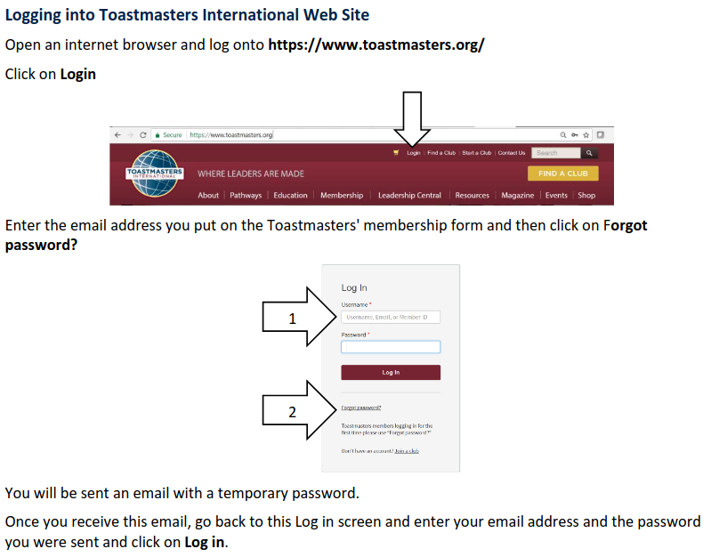
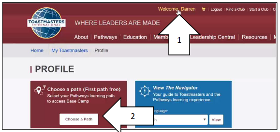
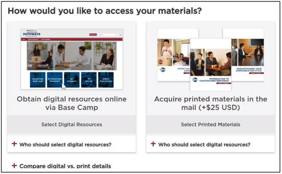
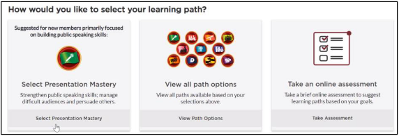
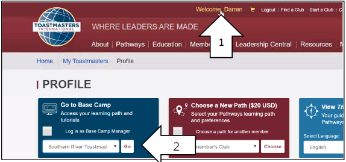

Welcome to Toastmasters Pathways
Getting Started for New Members
What is Pathways?
Pathways is an interactive and flexible education
program that was created to help you strengthen your
communication and leadership skills as you grow
toward personal and professional success—all while
having fun with others in the process!
What is a Path?
- Each path focuses on different skills: Leadership, Communication, or Public Speaking.
- Examples: Presentation Mastery, Dynamic Leadership, or Effective Coaching.
Log into Pathways using your Toastmasters account.

Click "Choose a Path" in the menu.

Choose digital or physical resources

Choose a path manually, or take the assessment to find the right path for you.

Wait for a confirmation email, then login again and go to basecamp

Step 2: Schedule Your Ice Breaker
- Contact your Vice President of Education (VPE) or use the club's web site.
- Pick a meeting date to present your Ice Breaker speech.
- Ask for help from a mentor if needed.
What is the Ice Breaker?
- Your first speech, introducing yourself to the club.
- Focus on sharing your personal story and goals.
- Speech length: 4-6 minutes.
Step 3: Complete the Ice Breaker Module
- Log into the Pathways Learning Management System.
- Go to your selected path and open the Ice Breaker module.
- Read the instructions, watch the videos, and complete the exercises.
- Mark the module as complete after delivering your speech.
Next Steps
- After your Ice Breaker, continue working through your chosen path.
- Reach out to your mentor or VPE for guidance.
- Attend meetings regularly to practice your skills!
Congratulations on starting your Pathways journey!